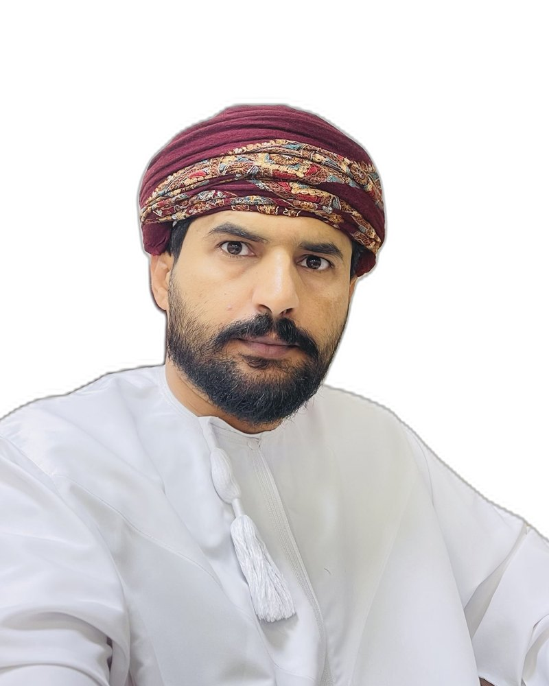

رئيس مجلس الإدارة والرئيس التنفيذي — تجتك TGTEC
تجلى للتجارة والمقاولات · ظفار، سلطنة عمان
مهندس مدني بخبرة إدارية تتجاوز اثنتي عشرة سنة، يجمع بين الإدارة والهندسة والتقنية. أسس تجتك لتطوير حلول ذكاء اصطناعي عربية تعمل داخل شبكات الجهات دون إنترنت، وأولها «مساعد الموظف الذكي». يتطلع دائماً إلى المزيد من المعرفة، ويضع إتقان العمل والتفاني في إنجازه في المقام الأول.